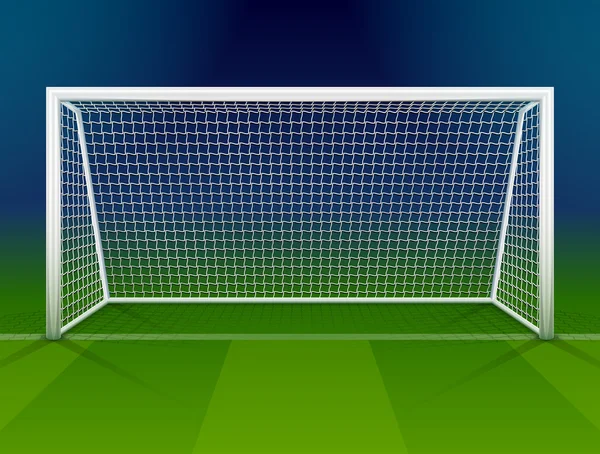

Trabzonspor'un Bu Sezon Ligde Kazandığı Maç Sayısı:
10
Galibiyetlerin 5 Tanesi İç Sahada Olurken Diğer 5 Galibiyet Deplasmanda Olmuştur.
Trabzonspor'un Bu Sezon Ligde Kaybettiği Maç Sayısı:
5
Mağlubiyetlerin 2 Tanesi İç Sahada Olurken 3 Tanesi Deplasmanda Olmuştur.
Trabzonspor'un Bu Sezon Ligde Berabere Kaldığı Maç Sayısı:
3
Beraberliklerin 1 Tanesi İç Sahada Alınmışken 2 Tanesi Deplasmanda Olmuştur.
Trabzonspor'un Bu Sezon Ligde Attığı Gol Sayısı:
32
Atılan Gollerin 12 Tanesi İç Sahada Olurken 20 Tanesi Deplasmanda Olmuştur.
Trabzonspor'un Bu Sezon Ligde Yediği Gol Sayısı:
20
Yenilen Gollerin 7 Tanesi İç Sahada Olurken 13 Tanesi Deplasmanda Olmuştur.
Trabzonspor'un Bu Sezon Ligde Aldığı Kırmızı Kart Sayısı:
1
Trabzonspor'un Bu Sezon Ligde Aldığı Sarı Kart Sayısı:
30
Trabzonspor'un Bu Sezon Ligde Kullandığı Penaltı Sayısı:
1
